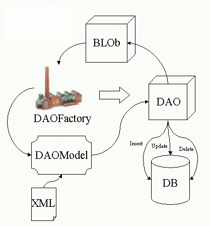

A package for generating automatic Data Access Objects (DAO) based on XML files.
Package Specification
The basic functionality of the package is showed on the following diagram :

Whereas :
- BLOb - Business Logic Object - This is an object to be implemented by the programmer using Efreet.
- DAOFactory - The DAOFactory class is responsible of keeping the models and generate DAOs to be used by the BLObs.
- DAOModel - A model based on an XML file to represent the DAO.
- DAO - The Data Access Object - An object with the capability to access RDBMS.
- DB - The Database.
- XML - The xml file containing the description for the DAO.
The idea is to reduce programming time by only specifying necessary queries on the XML file, and use the functionality provided by the DAO to access the database.
XML File Example
<DAO NAME="Example" TABLE="USER">
<COLUMN NAME="USER_ID" REQUIRED="true" TYPE="NUMERIC" SIZE="8"></COLUMN>
<COLUMN NAME="LOGIN" REQUIRED="true" TYPE="CHAR" SIZE="8"></COLUMN>
<COLUMN NAME="NAME" REQUIRED="true" TYPE="CHAR" SIZE="40"></COLUMN>
<COLUMN NAME="PASSWORD" REQUIRED="true" TYPE="CHAR" SIZE="28">' '</COLUMN>
<COLUMN NAME="CHWHEN" REQUIRED="false" TYPE="DATE">sysdate</COLUMN>
<COLUMN NAME="CHWHO" REQUIRED="false" TYPE="NUMERIC" SIZE="8">0</COLUMN>
<QUERY NAME="nextUser">
select USER_ID.NEXTVAL as ID from DUAL
<RESULT INDEX="1">USER_ID</RESULT>
</QUERY>
<QUERY NAME="search">
select USER_ID, LOGIN, NAME
from USER
where USER_ID <> 0
and USER_ID = decode(?, 0, USER_ID, '', USER_ID, ?)
and LOGIN LIKE '%'||?||'%'
order by LOGIN
<PARAMETER INDEX="1" TYPE="NUMERIC"/>
<PARAMETER INDEX="2" TYPE="NUMERIC"/>
<PARAMETER INDEX="3" TYPE="CHAR"/>
<RESULT INDEX="1">S_USER_ID</RESULT>
<RESULT INDEX="2">S_LOGIN</RESULT>
<RESULT INDEX="3">S_NOME</RESULT>
</QUERY>
</DAO>
@since 1.3